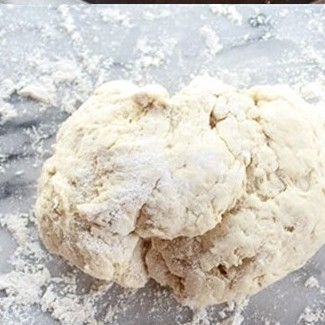
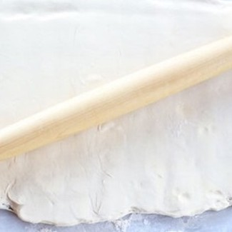
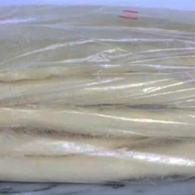

Các bước thực hiện
1

Trộn bột: Trộn đều bột mì, men, đường và muối. Thêm sữa tươi và nước ấm, nhào đến khi bột mịn không dính tay.
2

Ủ bột: Để bột nghỉ 1-2 giờ ở nơi ấm áp cho đến khi bột nở gấp đôi.
3
Cán bột và gói bơ: Cán bột thành hình chữ nhật, đặt bơ vào giữa và gập bột lại để bọc kín bơ.
4

Tạo hình: Cán bột mỏng, cắt thành hình tam giác và cuộn lại từ đáy lên đỉnh để tạo hình croissant.
5
Ủ lần 2: Xếp bánh lên khay, để nghỉ thêm 30-40 phút cho bột nở.
6
Nướng bánh: Quét trứng lên mặt bánh và nướng ở 190°C trong 15-20 phút đến khi vàng giòn.